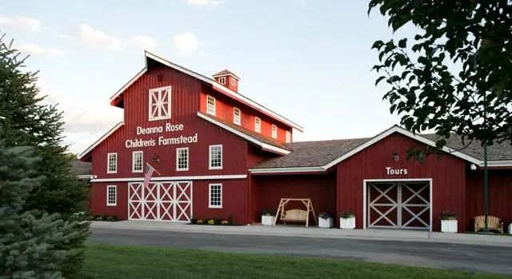
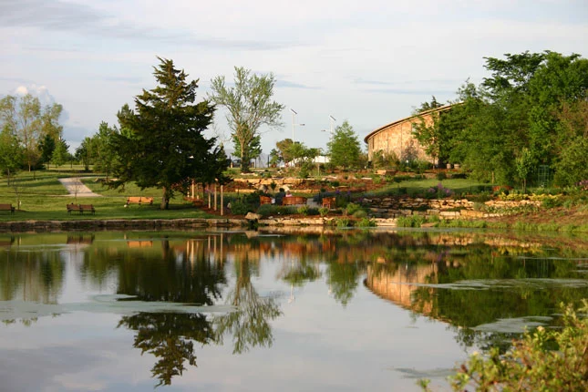
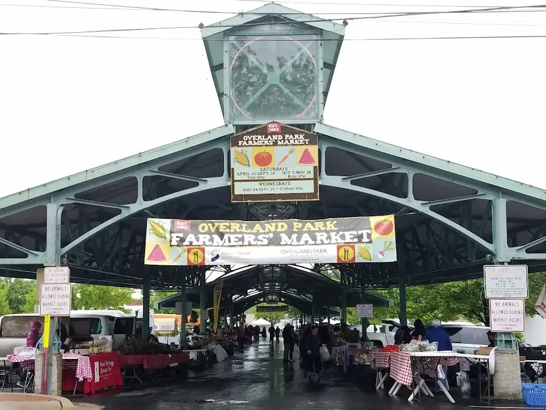
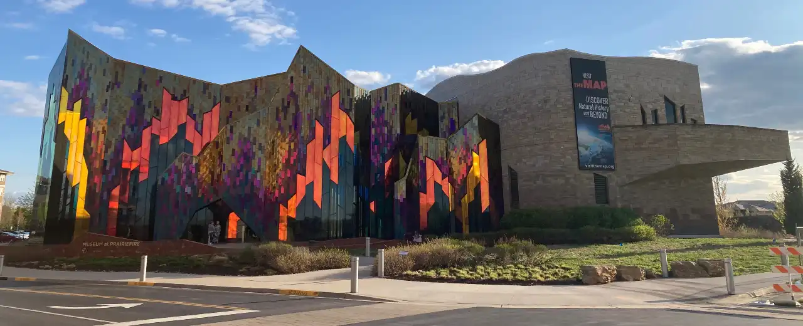
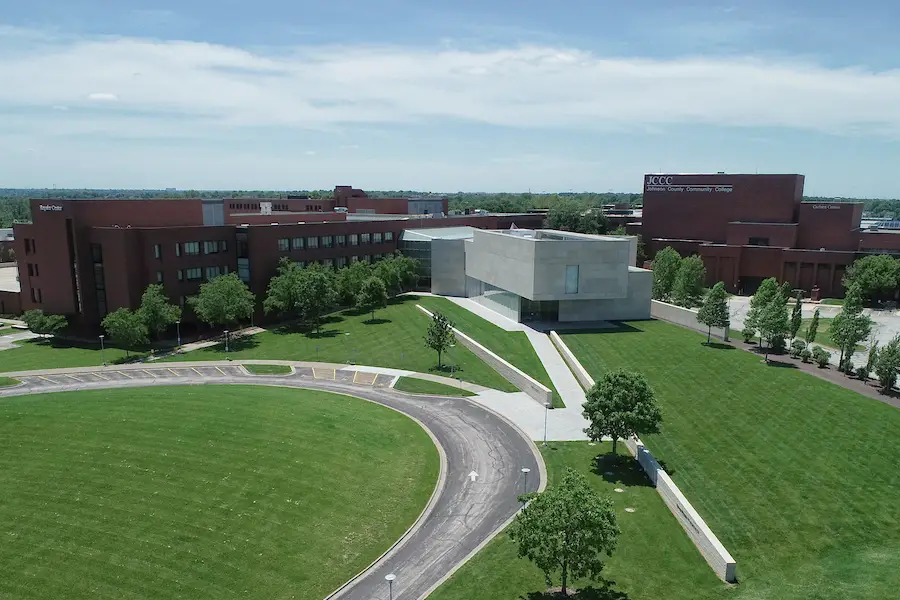
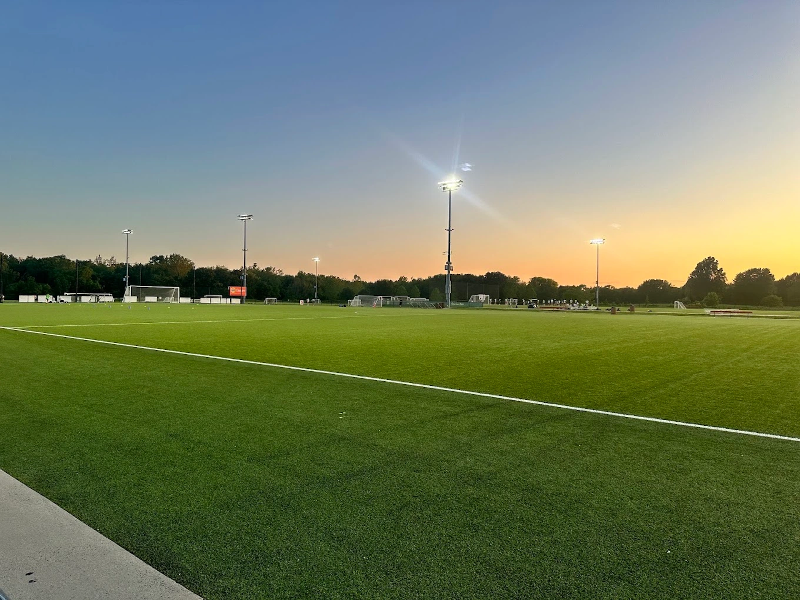

Overland Park Chamber of Commerce
Home
Discover
Directory
Join

Deanna Rose Farmstead

Overland Park Arboretum

Overland Park Farmers Market

PrairieFire Museum

Johnson County Community College

Scheels Soccer Complex